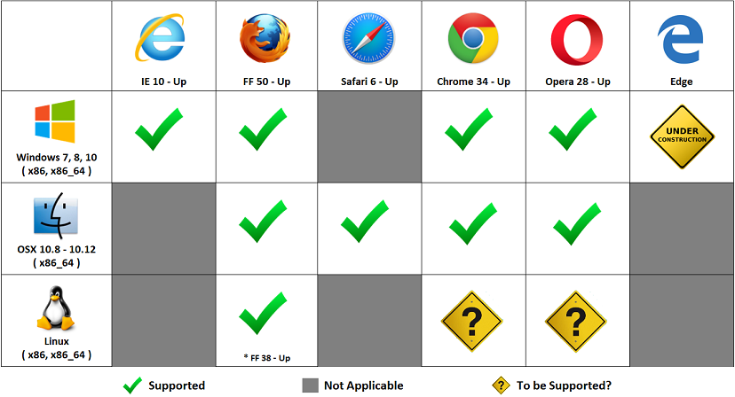

Frequently Asked Questions (FAQ)
This page answers many of the frequently asked questions regarding SConnect.
Installing / Updating SConnect
This page describes how to install SConnect.
Chrome
Step 1. Accept Terms and Conditions
When accessing a page that uses SConnect and installation / update is required, you will be presented with Terms and Conditions dialog.
Click Accept and Install or Accept and Update.
Step 2. Install Extension
After the Terms and Conditions are accepted, an installation guide dialog will appear in the middle of the page.
Click the first image displayed on the installation guide dialog.
Once clicked, a popup window will then appear and bring you to the SConnect Extension page in the Chrome Webstore.
Click the button located on the top right side of the page to trigger the installation of SConnect Extension.
Once triggered, an extension installation confirmation dialog will then appear in the middle of the main page.
Click Add to confirm the installation.
Step 3. Install Extension Host
Once the Extension installation completed, a dialog will then appear at the bottom of the page informing you about the Extension Host download status.
Wait until the download is completed and then click it to trigger the installation of SConnect Extension Host.
Once triggered, a dialog will then appear in the middle of the page asking for your confirmation to run.
Verify that the Extension is digitally signed by Gemalto, Inc., then click Run to begin the installation.
Once triggered, a dialog will then appear in the middle of the page that will guide you through the complete installation process.
Verify that the Extension is digitally signed by Gemalto, Inc., then Continue and complete the installation procedure.
Step 4. Installation Complete
Upon the successful installation, the page will automatically reload and you can begin using SConnect.
Firefox
Step 1. Accept Terms and Conditions
When accessing a page that uses SConnect and installation / update is required, you will be presented with Terms and Conditions dialog.
Click Accept and Install or Accept and Update.
Step 2. Download Extension
After the Terms and Conditions are accepted, a dialog will appear at the top of the page asking you to confirm the Extension installation.
Click Allow and a dialog will then appear at the top of the page informing you about the Extension download status.
Wait until the download is complete.
Step 3. Install Extension
Once completed, a dialog will appear in the middle of the page asking for your confirmation to install the Extension.
Verify that the Extension is digitally signed by Gemalto, Inc., then click Install Now to proceed with the installation.
Once completed, a dialog will appear at the top of the page asking for your confirmation to install the Extension.
Step 4. Installation Complete
Wait until the Extension installation is complete. Once completed, a dialog will appear at the top of the page informing you about the installation status.

Upon the successful installation, the page will automatically reload and you can begin using SConnect.
Internet Explorer
Step 1. Accept Terms and Conditions
When accessing a page that uses SConnect and installation / update is required, you will be presented with Terms and Conditions dialog.
Click Accept and Install or Accept and Update.
Step 2. Download and Install Extension
After the Terms and Conditions are accepted, a dialog will appear at the bottom of the page asking you to confirm the Extension installation.

Click Run to proceed with the Extension download and installation.
Step 3. Installation Complete
New Installation
Upon a successful installation, the page will automatically reload and you can begin using SConnect.
Note: SConnect Settings toolbar and menu item will only be available after the browser restart.
Update
Upon a successful update, a dialog will appear at the top of the page asking you to restart Internet Explorer.
Restart Internet Explorer to complete the procedure. Upon restart, you can begin using SConnect.
Safari
Step 1. Accept Terms and Conditions
When accessing a page that uses SConnect and installation / update is required, you will be presented with Terms and Conditions dialog.
Click Accept and Install or Accept and Update.
Step 2. Download Extension
After the Terms and Conditions are accepted, the Extension will start being downloaded immediately.
Wait until the download is complete. Once completed, double-click it to trigger the installation.
Step 3. Install Extension
Once triggered, a dialog will appear in the middle of the page that will guide you through the complete installation process.
Verify that the Extension is digitally signed by Gemalto, Inc., then click Continue and complete the installation procedure.
Wait until another dialog appeared in the middle of the page asking for your confirmation to install the Extension into Safari.
Click InstallTrust to confirm, then wait for the remaining installation procedure to complete.
Step 4. Installation Complete
Once completed, the page will automatically reload and then you can begin using SConnect.
Opera
Step 1. Accept Terms and Conditions
When accessing a page that uses SConnect and installation / update is required, you will be presented with Terms and Conditions dialog.
Click Accept and Install or Accept and Update.
Step 2. Install Extension
After the Terms and Conditions are accepted, an installation guide dialog will appear in the middle of the page.
Click the first image displayed on the installation guide dialog.
Once clicked, a popup window will then appear and bring you to the SConnect Extension page in the Opera Webstore.
Click the button located on the top right side of the page to trigger the installation of SConnect Extension.
Step 3. Install Extension Host
Once the Extension installation completed, a dialog will then appear at the top of the page informing you about the Extension Host download status.
Wait until the download is complete. Once completed, double-click it to trigger the installation of SConnect Extension Host.
Once triggered, a dialog will then appear in the middle of the page asking for your confirmation to run.
Verify that the Extension is digitally signed by Gemalto, Inc., then click Run to begin the installation.
Once triggered, a dialog will then appear in the middle of the page that will guide you through the complete installation process.
Verify that the Extension is digitally signed by Gemalto, Inc., then Continue and complete the installation procedure.
Step 4. Installation Complete
Upon the successful installation, the page will automatically reload and you can begin using SConnect.
Uninstalling SConnect
This page describes how to uninstall SConnect.
Chrome
Step 1. Extension Removal
1.1. Navigate to Extensions Manager
Open the Extensions Manager page by navigating to the Settings > Tools > Extensions.
1.2. Remove Extension
Find the SConnect extension, then click the trash can icon.
1.3. Confirm Removal
Confirm that you want to remove the extension by clicking Remove.
Once the removal is complete, the SConnect extension will no longer be in the list.
Step 2. Extension Host Removal
2.1. Navigate to Programs and Features
Open Programs and Features page by navigating to the Windows Control Panel > Programs > Uninstall a program.
2.2. Remove Extension Host
Find and select the SConnect Chrome, then click Uninstall.
Once the removal is complete, the SConnect extension host will no longer be in the list.
2.1. Navigate to Uninstall Application
Find the uninstall application under Home > Library > Application Support > SConnect.
Double-click on the uninstall application to execute.
2.2. Removal Complete
Once the removal is complete, close the uninstall application by clicking Quit.
Firefox
Step 1. Navigate to Add-ons Manager
Open the Add-ons Manager page by navigating to the Settings > Add-ons.
Step 2. Remove Extension
Find the SConnect extension, then click Remove.
Once the removal is complete, the SConnect extension will no longer be in the list.
Internet Explorer
Step 1. Navigate to Programs and Features
Open Programs and Features page by navigating to the Windows Control Panel > Programs > Uninstall a program.
Step 2. Remove Extension
Find and select the SConnect IE extension, then click Uninstall.
Once the removal is complete, the SConnect IE extension will no longer be in the list.
Safari
Step 1. Navigate to Uninstall Application
Find the uninstall application under Home > Library > Application Support > SConnect.
Double-click on the uninstall application to execute.
Step 2. Removal Complete
Once the removal is complete, close the uninstall application by clicking Quit.
Step 3. Restart Safari
SConnect removal will be effective only after a Safari restart.
Opera
Step 1. Extension Removal
1.1. Navigate to Extensions Manager
Open the Extensions Manager page by navigating to the Opera > Extensions.
Open the Extensions Manager page by navigating to the View > Show Extensions.
1.2. Remove Extension
Find the SConnect extension, then click the remove icon.
1.3. Confirm Removal
Confirm that you want to remove the extension by clicking OK.
Once the removal is complete, the SConnect extension will no longer be in the list.
Step 2. Extension Host Removal
2.1. Navigate to Programs and Features
Open Programs and Features page by navigating to the Windows Control Panel > Programs > Uninstall a program.
2.2. Remove Extension Host
Find and select the SConnect Host, then click Uninstall.
Once the removal is complete, the SConnect Host will no longer be in the list.
2.1. Navigate to Uninstall Application
Find the uninstall application under Home > Library > Application Support > SConnect.
Double-click on the uninstall application to execute.
2.2. Removal Complete
Once the removal is complete, close the uninstall application by clicking Quit.
SConnect Status
This page describes the content of SConnect Status page.
Inactive
The inactive state indicates that the site currently displayed in the browser's active tab is not accessing SConnect extension.
Note.
- Status: status text and indicator
- Domain: URL of the site accessing SConnect
- AddOns: list of add-ons being accessed by the site
Active
The active state indicates that the site currently displayed in the browser's active tab is accessing SConnect extension.
Note.
- BLOCK ACCESS: to disallow current site to further accessing SConnect
Blocked
The blocked state indicates that the site currently displayed in the browser's active tab is trying to access SConnect extension, but being blocked by user.
Note.
- ALLOW ACCESS: to allow current site to access SConnect
See also: SConnect Settings
SConnect Settings
This page describes the content of SConnect Settings page.
AddOns
This page displays the list of add-ons installed on the system.
To display detailed info about the addon, click on the info icon.
To remove the addon from the system, click on the trash icon and confirm.
Permission
This page displays permission settings and list of allowed or blocked sites.
To disallow access to SConnect from all sites by default, check the option. Otherwise, leave it unchecked.
To remove site from the list of blocked or allowed sites, click on the remove icon and confirm.
See also: SConnect Status
About
This page displays the current version of the SConnect.
Dialogs
Please select a dialog you would like more information on.
Timeout
This is the timeout dialog. It occurs when the installation procedure is not completed within the specified timeframe.
Please reload the page to begin the installation again. For instructions, check the install page.
ActiveX Filtering
This is the ActiveX Filtering dialog.
This occurs when ActiveX Filtering is enabled in Internet Explorer. This will prevent the SConnect extension from working.
To disable this feature, perform the following steps:
No Menu Bar
If the Menu bar is not present, enable it by right-clicking above the address bar and clicking Menu bar.
Menu Bar
If the Menu Bar is present, click Tools, then uncheck ActiveX Filtering to disable the feature.
Reload the page to begin using SConnect.
Compatibility
This page describes the browsers and operating systems that are supported by SConnect.
